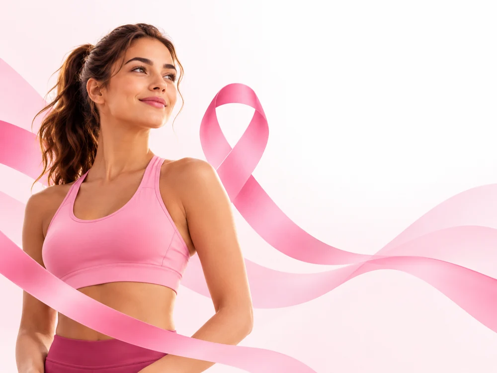

Pular para o conteúdo
PERGUNTA 1
DE 5

O que o Outubro Rosa quer colocar em movimento?
A competição entre atletas
A conscientização e o diagnóstico precoce do câncer de mama
As tendências de moda
Somente as corridas de rua